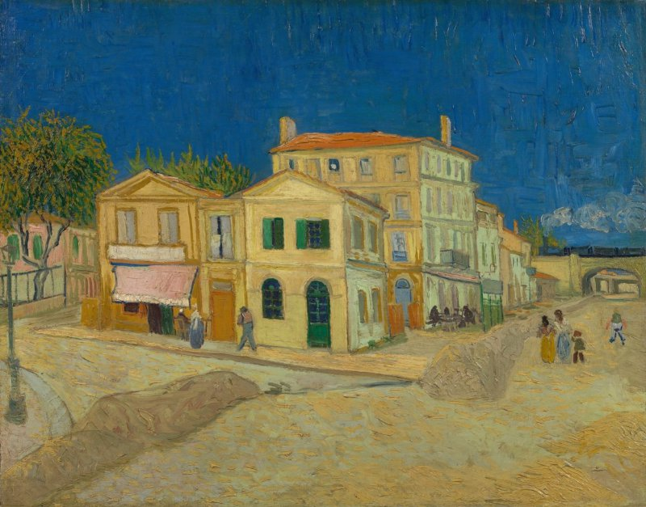

黄房子（街道） The Yellow House (The Street)
梵高 · 1888年9月 · 阿姆斯特丹梵高博物馆
Vincent van Gogh · September 1888 · Van Gogh Museum, Amsterdam
图片：Wikimedia Commons，公有领域 / Image: Wikimedia Commons, public domain

发现 · Discover
绿色百叶窗 Green shutters
有绿色百叶窗的那一部分，就是梵高住的地方。1888年5月，他在这里租了四个房间。
The part with green shutters is where Van Gogh lived. In May 1888 he rented four rooms here.
左边的餐馆 The restaurant
梵高经常在画面左边的这家餐馆吃饭。
Van Gogh often ate at the restaurant on the left.
铁路桥 Railway bridges
他的朋友、邮递员约瑟夫·鲁兰，就住在第二座铁路桥后面。
His friend, the postman Joseph Roulin, lived just beyond the second railway bridge.
蓝天 The sky
梵高在给提奥的信中写道，阳光下的黄房子，配上无比清新的蓝天，"太了不起了"。
Van Gogh wrote to Theo that the yellow houses in the sunlight, against the incomparably fresh blue, were "tremendous".
黄色的地面 Yellow ground
不只是房子，梵高说，连整个地面也是黄色的。
Not only the houses: Van Gogh said the whole ground was yellow too.
画的名字 The title
梵高自己把这幅画叫作《街道》，因为他画的不只是房子，而是他每天生活的这一片街区。
Van Gogh called this painting "The Street": it shows not just his house, but the neighbourhood he lived in every day.
故事 · The story
ACT I 第一幕 · 搬进来 Moving in
1888年5月，梵高在阿尔勒拉马丁广场租下黄房子的四个房间。他终于有了一个地方，不仅能画画，还能请朋友来住。
In May 1888, Van Gogh rented four rooms in the Yellow House on Place Lamartine in Arles. At last he had a place to paint, and to invite friends to stay.
1888年9月 · 阿姆斯特丹梵高博物馆 / September 1888 · Van Gogh Museum, Amsterdam
ACT II 第二幕 · 画家之家 A house for artists
他想把这里变成一座画家之家，让志同道合的画家一起生活和创作。那年秋天，高更来了，在这里短暂住过一段时间。
He hoped to turn it into a house for artists, where like-minded painters could live and work together. That autumn, Gauguin came and stayed here for a short time.
ACT III 第三幕 · 消失的房子 The house that disappeared
黄房子今天已经不在了。没有了房子的广场，看起来几乎和当年一样。
The Yellow House no longer exists. Without it, the square looks almost the same as it did then.
房子不在了，画还在。 The house is gone. The painting remains.
作品档案 · Artwork record
| 画家（生卒年） · Artist (dates) | 文森特·梵高（1853–1890） / Vincent van Gogh (1853–1890) |
|---|---|
| 画名 · Title | 黄房子（街道） / The Yellow House (The Street) |
| 年份 · Date | 1888年9月，阿尔勒 / September 1888, Arles |
| 材质 · Medium | 布面油画 / Oil on canvas |
| 收藏地 · Collection | 阿姆斯特丹梵高博物馆 / Van Gogh Museum, Amsterdam (Vincent van Gogh Foundation) |
关于画家 · About the artist
文森特·梵高（1853–1890），荷兰画家。他将近27岁才开始画画，短短十年留下了大量作品。1888年他来到法国南部的阿尔勒，在那里画出了许多最著名的画。
Vincent van Gogh (1853–1890) was a Dutch painter. He began painting at around 27 and left a huge body of work in just ten years. In 1888 he moved to Arles in the south of France, where he painted many of his best-known works.
更多梵高的画 · More by Vincent van Gogh